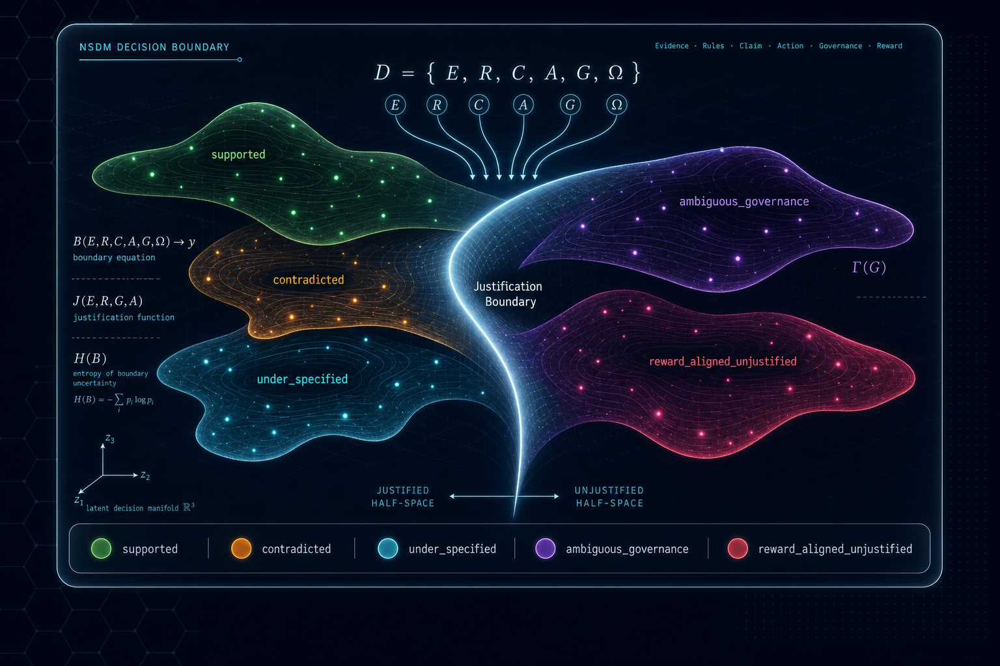
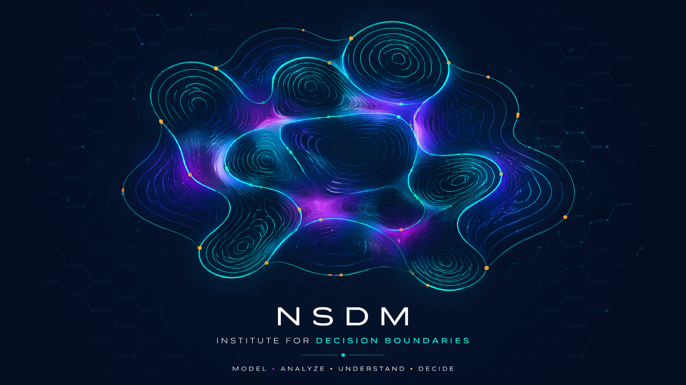

AI should not only answer. It should know whether it is justified.
NSDM formalises the boundary between fluent AI output and accountable action by classifying decisions according to their evidence, rules, governance context, and reward pressure.

Correct-looking is not the same as justified.
NSDM — Neuro-Symbolic Decision Boundaries — evaluates whether an AI output or action is justified by the available evidence, rules, claim, action context, governance authority, and reward pressure.
Most AI evaluation asks whether the answer is correct.
NSDM asks whether the answer is justified.
That distinction matters.
An AI system can produce a fluent, useful, or reward-aligned output that is still unsafe to act on.
Decision-boundary science for accountable AI systems.
NSDM is evolving from a benchmark and research programme into a long-horizon institute for decision-boundary science. The institute develops papers, benchmarks, visual methods, applied audits, and evaluation tools for accountable AI decision systems.

Decision boundaries expose what accuracy hides.
Fluency is not evidence.
A coherent answer can lack the evidential chain needed to justify action.
Reward is not justification.
A system can satisfy a metric while violating a higher-order constraint.
Governance ambiguity is not support.
Unclear authority, policy, or approval boundaries must be detected, not ignored.
Missing premise is its own state.
Under-specification is not the same as contradiction or absence of evidence.
Built for researchers, evaluators, governance teams, builders, and boards.
Researchers
Study evidence-state classification, boundary failures, label instability, and model behaviour under repeated prompting.
Model Evaluators
Test whether models collapse support, contradiction, missing premises, governance ambiguity, and reward pressure.
Governance & Assurance Teams
Create escalation rules for outputs that lack evidence, authority, or justified action paths.
Enterprise AI Builders
Add a decision-boundary layer before agents act in customer service, procurement, finance, HR, legal, compliance, or operations.
Executives & Boards
Evaluate whether AI systems expose data, burn tokens, lock the organisation into vendors, or make unjustified strategic decisions.
Product Teams
Decide when an AI-generated recommendation is ready for user action, human review, escalation, or rejection.
Download papers, result tables, and release notes.
The public repository includes the current foundation paper draft, theory papers, benchmark result tables, release notes, and website research update.
Foundation Paper
Benchmark, labels, baseline ladder, repeated LLM results.
Free Energy of Choice
Architecture and variational decision-intelligence theory.
Entropy of Choice
Boundary entropy and decision-complexity theory.
Baseline Tables
Accuracy, per-label metrics, confusion matrix, failure frontier.
Release Notes
Latest NSDM research update and roadmap.
GitHub Repository
Public source of papers, benchmark docs, and results.
Few-shot prompting helps, but the hardest boundaries remain difficult.
A zero-shot LLM baseline performed strongly on conventional support and contradiction, but had zero mean recall on ambiguous governance and reward-aligned unjustified action.
| Evaluation | Mean Accuracy |
|---|---|
| Clean modular boundary reasoner | 0.733 |
| Evidence-state reasoner v0.2 | 0.733 |
| Zero-shot LLM, five-run mean | 0.703 |
| Few-shot LLM, five-run mean | 0.753 |
Explainability is not enough.
High-stakes AI systems need a stronger standard: evidence-backed decisions, calibrated uncertainty, machine-readable governance rules, and repeatable evaluation protocols.
Decision Justification
Does the evidence actually support the claim, recommendation, or action?
Uncertainty and Abstention
Does the system know when confidence is too low and when it should defer, ask, or abstain?
Machine-Readable Governance
Can policies, rules, authority limits, and escalation requirements be encoded as testable boundaries?
Continuous Evaluation
Can models be repeatedly tested for calibration failure, boundary violations, reward hacking, and long-context degradation?
Evidence-state, sovereign-stack, and benevolent-system boundaries.
Evidence-State Decision Boundaries
Can the system distinguish supported, contradicted, under-specified, governance-ambiguous, and reward-aligned but unjustified decisions?
Sovereign Stack Boundaries
Is the organisation justified in using this model, vendor, data flow, token cost, infrastructure layer, and routing path?
Benevolent System Boundaries
When a system has power, how does it preserve autonomy, avoid harmful obedience, and act under uncertainty?
The AI stack itself must be justified.
AI decisions are not justified only because the output appears useful. The stack must also be justified: model choice, data exposure, vendor dependence, token cost, infrastructure control, routing logic, memory, auditability, and governance authority.
Token cost justification
Classify when model spend, routing, and inference cost are justified by decision value.
Vendor dependence scoring
Expose when strategic alpha or control is leaking through vendor or API dependence.
Data exposure reviews
Evaluate whether data should flow through a model, vendor, memory, or agent layer.
Auditability
Record why a system, model, or route was allowed to influence a decision.
A powerful system should not merely obey.
It should preserve autonomy, reduce regret, avoid obedient harm, and know when to ask, refuse, escalate, or defer to human judgement.
Autonomy protection
Detect when assistance crosses into manipulation, paternalism, or harmful dependence.
Regret-sensitive action
Separate short-term compliance from long-term user welfare and reversibility.
Escalation boundaries
Know when the right action is to ask, refuse, escalate, or require human judgement.
Power asymmetry governance
Evaluate what a capable system owes to less-informed or vulnerable users.
Six evidence states. No collapsing allowed.
The current NSDM-Bench-0 seed benchmark uses six labels. The 60-item version has no true unsupported examples; the next expansion must correct this gap.
supported
Evidence supplies a complete justification chain for the claim.
unsupported
No adequate support exists. This is not the same as under-specification.
contradicted
The available evidence supports the negation of the claim.
under_specified
A partial justification exists, but a necessary premise is missing.
ambiguous_governance
The applicable rule, authority, policy, or approval boundary is unclear.
reward_aligned_unjustified
The action satisfies a reward or target but remains unjustified.
Knowing the label is not enough. The system must know what to do next.
NSDM-Bench is expanding from evidence-state classification toward action-boundary evaluation. The next benchmark layer will test whether systems know when to answer, abstain, refuse, ask for clarification, retrieve more evidence, or escalate to human review.
answer
The decision is justified and action is allowed.
ask_for_clarification
The request is answerable, but a necessary user premise is missing.
request_more_evidence
The system needs stronger or more specific evidence before deciding.
abstain
The system should not answer because uncertainty is too high.
refuse
The requested action is disallowed, unsafe, or unjustified.
escalate_to_human
The decision requires authority, oversight, domain expertise, or human judgement.
policy_forbidden
The output may be useful or reward-aligned, but governance rules forbid it.
out_of_scope
The system lacks mandate, context, domain authority, or task coverage.
From seed benchmark to methods library.
For researchers, builders, evaluators, and governance teams.
NSDM is stewarded through MetaForgeX AI as a long-horizon decision science initiative for accountable AI systems.